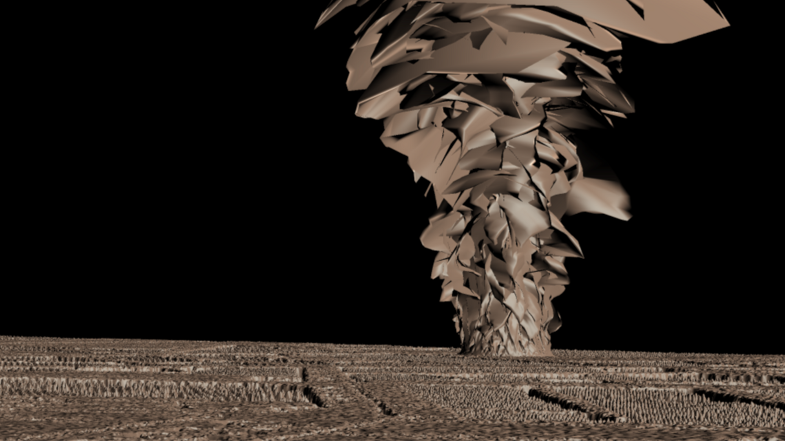
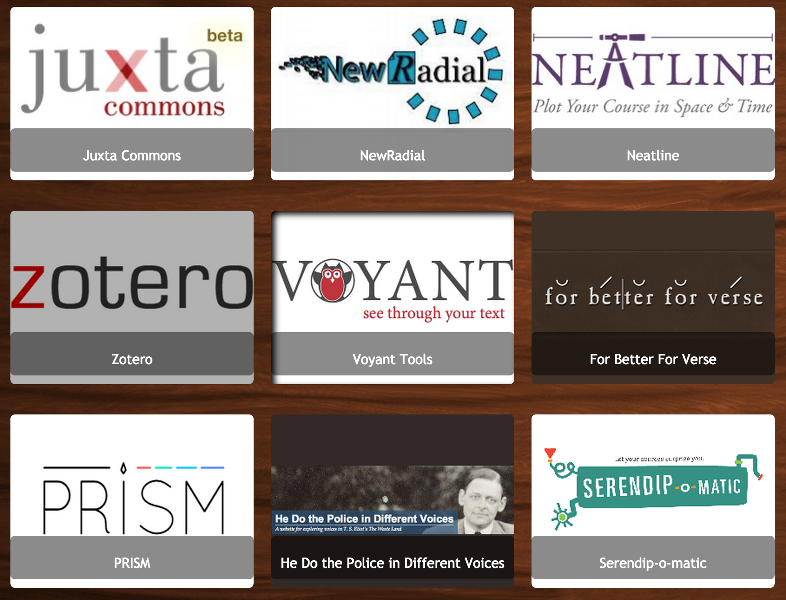
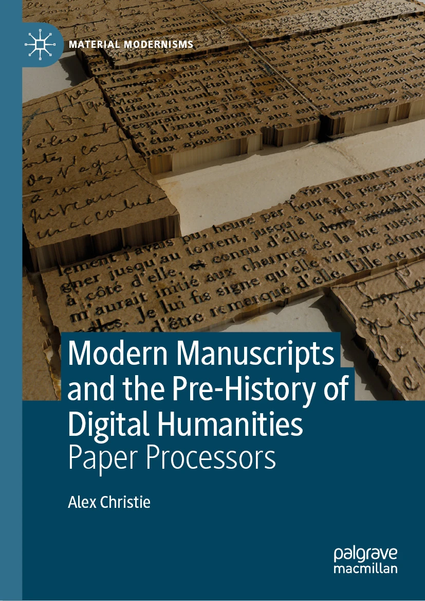
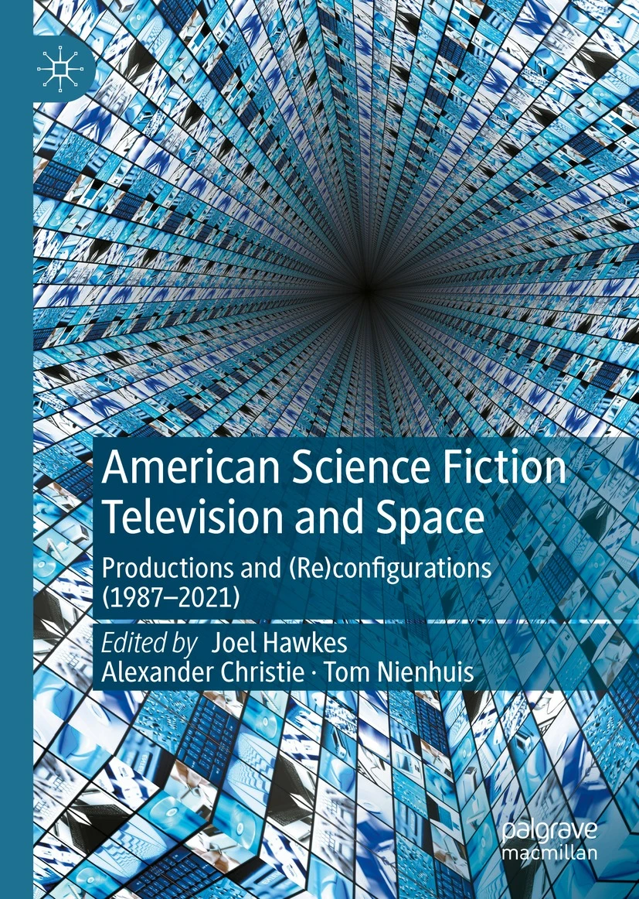
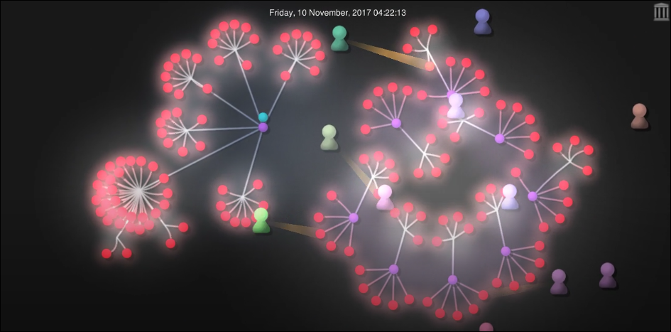
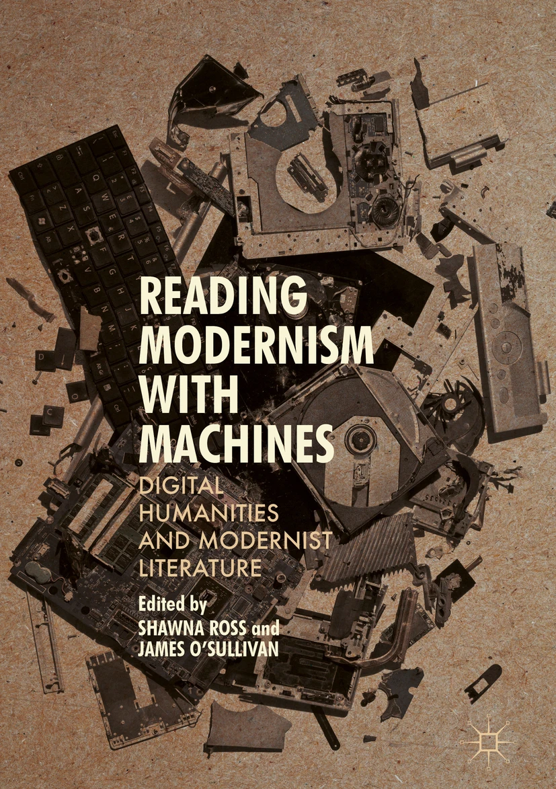

About me
Bio
I am an Associate Professor of Digital Humanities at Brock University, where I also currently serve as Chair of the Department of Digital Humanities. My research interests include spatial humanities, manuscript studies, modernist digital humanities, and (most recently) developing augmented reality data visualization tools from a humanities perspective (Three.js + Rails). Please scroll up to view notable projects and publications.
Awards
Excellence in Teaching for Early Career Faculty, Brock University. (2019)
Selected Projects

Wordscape
Wordscape is an augmented reality data visualization tool that lets users feel data by placing it in physical relationship to their bodies. It reimagines modernist avant-garde techniques as design principles for spatial computing environments. This project is in active development.

Z-axis Research
Z-axis research was a mapping project that used warped 3D maps to interpret modernist literature, rather than impose GIS-specific space on texts that predate digital mapping. The project was conceived by myself and Katie Tanigawa, run through the Modernist Versions Project (MVP), The Maker Lab, and Implementing New Knowledge Envrionments (INKE) at the University of Victoria. The project was active from 2014-2020.

Pedagogy Toolkit
Pedagogy Toolkit is an open source and community-driven repository of teaching materials, community-authored guides to teaching with DH tools, and open access syllabuses and a syllabus templating tool. It applies an open source philosophy to course development: all content is free to use for any non-commercial purpose, including open source code for authoring teaching and project websites with no funds or technical expertise required. The project was active from 2013-2017.
Selected Publications

Modern Manuscripts and the Pre-History of Digital Humanities: Paper Processors. Book series: Material Modernisms. (Palgrave Macmillan, 2024).
While text processing is often associated with the digital humanities, it is still seen as worlds apart from literary modernism and its aesthetic preoccupations. This book upsets that narrative...

American Science Fiction Television and Space, with Joel Hawkes and Thomas Nienhuis (Palgrave Macmillan, 2023).
This collection reads the science fiction genre and television medium as examples of heterotopia (and television as science fiction technology), in which forms, processes, and productions of space and time collide – a multiplicity of spaces produced and (re)configured...

Beyond the fear of failure: Towards a method for student experiential autobiography mapping (SEAM), with Andrew Roth. The Journal of Interactive Technology and Pedagogy (16, 2019).
This article advances a pedagogical ethos, which we call SEAM (Student Experiential Autobiography Mapping), that deliberately interweaves the interests of students, staff and faculty...
Building a toolkit for digital pedagogy. E. Murphy & S. Smith (Eds.), Digital Humanities Quarterly, 11(3) (2017).
Building a toolkit for digital pedagogy constructs infrastructure as a mode of intellectual inquiry, exposing classroom power as a conduit for ethical connections between students, teachers, and digital development teams...

Mapping modernism’s z-axis: A model for spatial analysis in modernist studies, with Katie Tanigawa. In S. Ross & J. O’Sullivan (Eds.), Reading modernism with machines: Digital humanities and modernist literature. (pp. 79-107). London: Palgrave Macmillan (2016).
Rather than primarily mapping where the action of a novel takes place, z-axis maps additionally emphasize subjective, embodied, and marginal experiences of the modern city, enabling critical attention to geography's role in modernist literary expression...